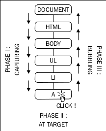

JavaScript 事件（Events）
注册事件的方法
Inline HTML attributes
1 | <div onclick="alert('Ouch!')">click</div> |
Element Properties
缺点：一个事件只能指定一个function，不能指定多个。
1 2 3 4 5 6 7 8 9 10 11 | <!-- to assign a function to the onclick property of a DOM node element. --> <div id="my-div">click</div> <script> var myelement = document.getElementById('my-div'); myelement.onclick = function () { alert('Ouch!'); alert('And double ouch!'); }; </script> |
DOM event listeners
The best way to work with browser events is to use the event listener approach
outlined in DOM Level 2, where you can have many functions listening to an event.
When the event fires, all functions are executed.
1 2 3 4 5 6 7 | <p id="closer">final</p> <script> var mypara = document.getElementById('closer'); mypara.addEventListener('click', function () {alert('Boo!');}, false); mypara.addEventListener('click', console.log.bind(console), false); </script> |
Capturing and bubbling ，事件传递
addEventListener()的第三个参数，决定是否使用 capturing。为保证跨浏览器兼容性，最好一直设置false，不使用 capturing ，只使用 bubblingstopPropagation()stops bubbling up and never reaches the document.- 可以利用事件传递，实现 event delegation。例如，<div> 下有10个button，可以为 <div> 添加 listener，而不用为每个按钮都加一个 listener。
详细分解如下。
例如：
1 2 3 4 5 | <body> <ul> <li><a href="http://phpied.com">my blog</a></li> </ul> </body> |
点击链接, 实际也点击了 <li>, 列表 <ul>, <body>, 和整个文档。 This is called event propagation .
- Event capturing: The click happens on the document first, then it propagates
down to the body, the list, the list item, and finally to the link - Event bubbling: The click happens on the link and then bubbles up to
the document
DOM Level 2 events specification 建议：the events propagate in three phases ：
- captuing
- at target
- bubbling

stopPropagation()， 阻止事件上传父节点
1 2 3 4 5 6 | function paraHandler(e) { alert('clicked paragraph'); e.stopPropagation(); } para.addEventListener('click', paraHandler, false); |
删除事件注册
1 | para.removeEventListener('click', paraHandler, false); |
删除默认事件 preventDefault()
浏览器默认有一些默认事件，例如，链接点击事件。
有时不需要这些事件，可以对 目标对象调用 preventDefault() ，来删除这些默认事件。
1 2 3 4 5 6 7 8 9 10 11 12 13 | // all links var all_links = document.getElementsByTagName('a'); for (var i = 0; i < all_links.length; i++) { // loop all links all_links[i].addEventListener( 'click', // event type function (e) { // handler if (!confirm('Sure you want to follow this link?')) { e.preventDefault(); } }, false // don't use capturing ); } |
event 的类型
- Mouse events
- mouseup, mousedown, click (the sequence is mousedown-up-click),
- dblclick
- mouseover (mouse is over an element), mouseout (mouse was over an element but left it), mousemove
- Keyboard events
- keydown, keypress, keyup (occur in this sequence)
- Loading/window events
- load (an image or a page and all of its components are done loading), unload (user leaves the page), beforeunload (the script can provide the user with an option to stop the unload)
- abort (user stops loading the page or an image in IE), error (a JavaScript error, also when an image cannot be loaded in IE)
- resize (the browser window is resized), scroll (the page is scrolled), contextmenu (the right-click menu appears)
- Form events
- focus (enter a form field), blur (leave the form field)
- change (leave a field after the value has changed), select (select text in a text field)
- reset (wipe out all user input), submit (send the form)
- drag events (dragstart, dragend, drop, and others)
- touch events ( touchstart, touchmove, and touchend)
浏览器兼容
1 2 3 4 | // 现代浏览器支持的方式 document.addEventListener('click', function (e) { console.log(e.target.nodeName); }, false); |
1 2 3 4 5 6 7 8 9 10 11 12 13 14 15 16 17 | // 兼容IE和老浏览器的代码 function callback(evt) { // prep work evt = evt || window.event; var target = evt.target || evt.srcElement; // actual callback work console.log(target.nodeName); } // start listening for click events if (document.addEventListener) { // Modern browsers document.addEventListener('click', callback, false); } else if (document.attachEvent) { // old IE document.attachEvent('onclick', callback); } else { document.onclick = callback; // ancient } |